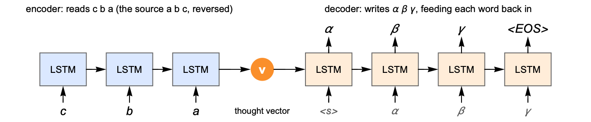
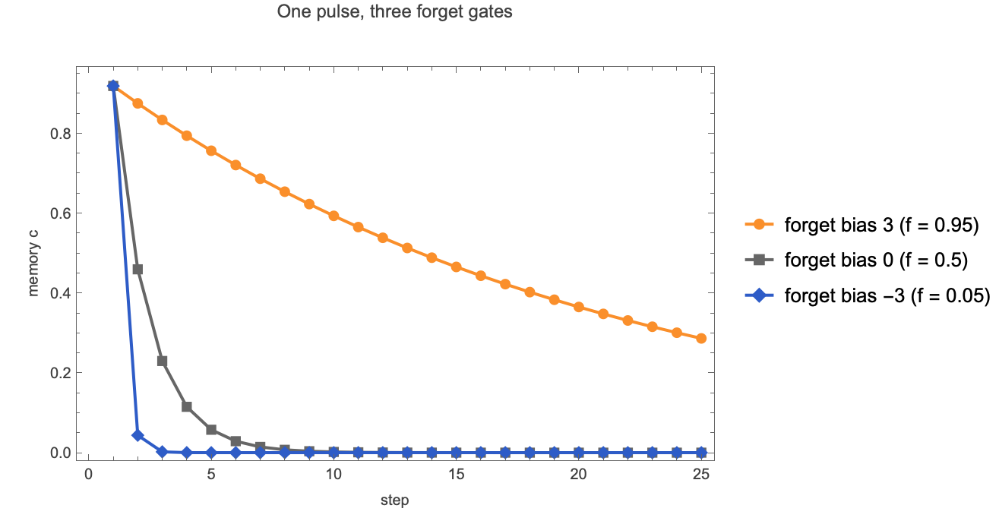
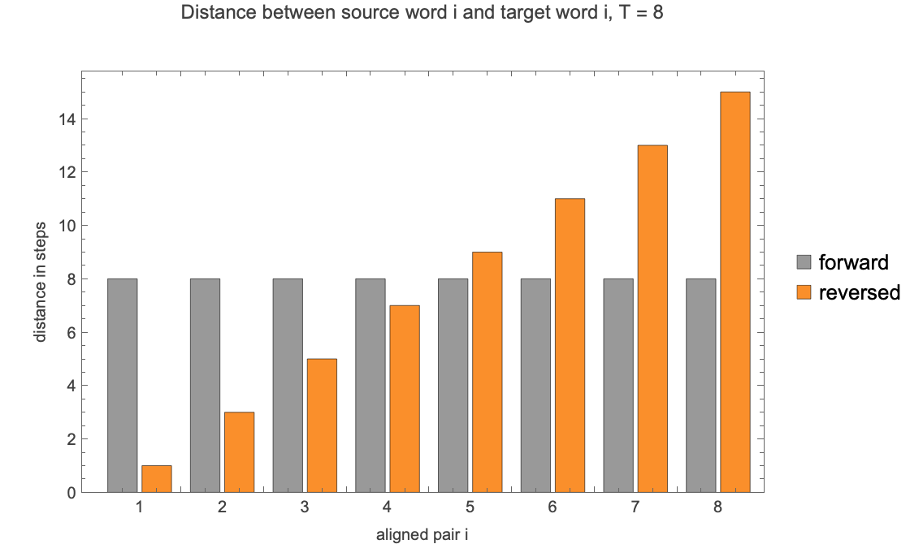
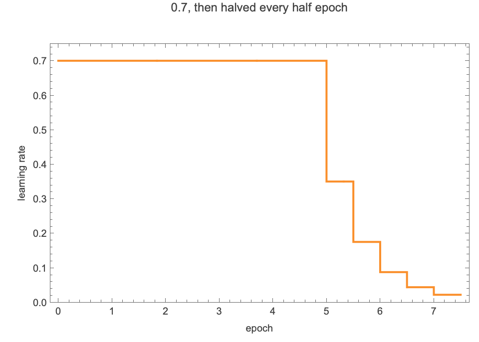
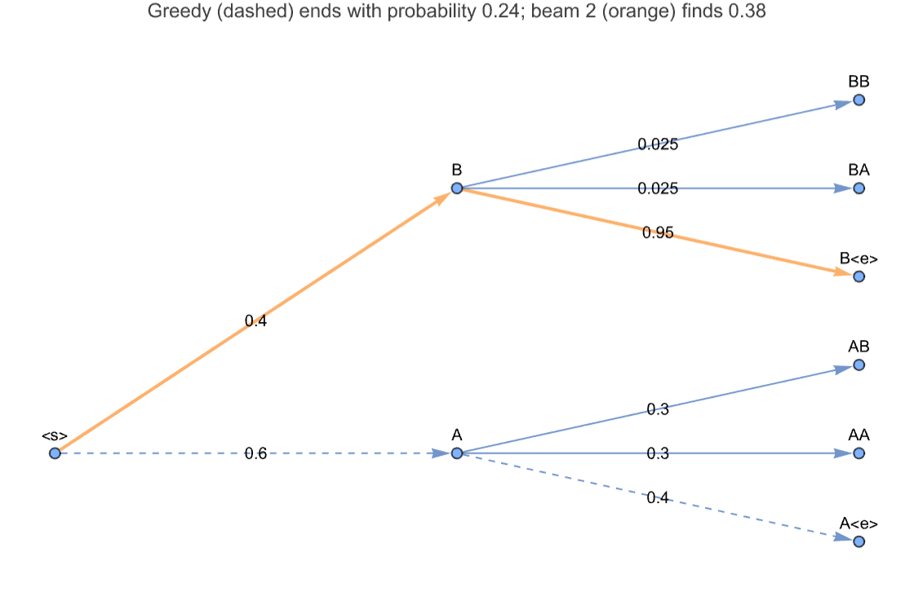

24 November 2026 · Computational Classnotes · TensorNets units of learning, 1 of 4
Two recurrent networks can translate. One reads the whole sentence
into a fixed-size vector, and the other writes the translation from that
vector. Sutskever, Vinyals and Le (2014) built this from deep LSTMs and
reached 34.8 BLEU on English to French. This unit builds each part of
their machine from plain arrays and checks it against Wolfram’s own
layers. The notebook unit1_seq2seq.nb carries the same
section numbers and computes every number quoted here.
<EOS> (or
<e> in toy examples).unit1_seq2seq.nb · glossary
docs/glossary.html.Read the reversed source into a vector, then write the target from it, one word at a time.

Fig. 1. The encoder–decoder. The encoder reads the reversed source and ends in the thought vector v. The decoder starts from v and writes the target, reading back each word it has just written (§2).
A sentence and its translation rarely have the same length, and word
i of one is not word i of the other. So the paper uses two networks. The
encoder reads the source one word at a time and ends in
a fixed-size vector v, the thought vector. The
decoder starts from v and writes the target one word at
a time, feeding each word back in, until it writes
<EOS>:
Three choices made it work (Section 2 of the paper): two different LSTMs for reading and writing, four layers each, and the source fed in reverse (§6).
An LSTM keeps the hidden state h and the memory cell c. At each step it reads an input x and computes four gates from x and the previous h:
The input gate i decides how much new content g to write, the forget gate f how much old memory to keep, and the output gate o how much memory to show. The memory is updated by addition. This additive update is why information and gradients survive over long sentences.
Worked by hand. Take one input and one cell, every weight 0.5 and every bias 0, start from h = c = 0 and read x = 1. Every gate sees 0.5·1 + 0.5·0 + 0 = 0.5. So i = f = o = σ(0.5) = 0.6225 and g = tanh(0.5) = 0.4621. Then c′ = 0.6225·0 + 0.6225·0.4621 = 0.2877, and h′ = 0.6225·tanh(0.2877) = 0.6225·0.2800 = 0.1743.
Wolfram’s LongShortTermMemoryLayer stores exactly these
twelve arrays (it calls g the memory gate). Its ports
State and CellState are h and c.
The forget gate decides how long memory lasts. After a single input pulse the memory is multiplied by f at every step, so it decays like fᵗ (Fig. 2).

Fig. 2. The memory c of a one-cell LSTM after one input pulse, for three forget-gate biases. With f = 0.95 the pulse is still 30 % present after 25 steps; with f = 0.05 it is gone after two.
Checked (notebook §3): the hand computation gives h′
= 0.17427, c′ = 0.28765. Our step, copied weights and all, equals
LongShortTermMemoryLayer (6 cells, 7 steps: True), also
from given starting states (True). After the pulse the ratio of
successive memories is σ(3) = 0.9526 exactly (True).
The paper stacks four LSTMs. Layer k reads the hidden states of layer k − 1. After the last source word, the final (h, c) of every layer is kept. Together they are the thought vector: 2 × 4 × 1000 = 8000 numbers in the paper’s model.
Checked (notebook §4): a three-layer stack coded
from arrays equals NetChain of three LSTM layers (True);
its thought vector has 2 × 3 × 5 = 30 numbers, and the paper’s 8000.
The decoder is a second deep LSTM with its own weights. Its layers start from the encoder’s final states. At each step it reads the embedding of the previous word, and a softmax turns its top hidden state into probabilities for the next word:
Worked by hand. For scores z = (2, 1, 0): e² = 7.389, e¹ = 2.718 and e⁰ = 1, with total 11.107. The probabilities are 0.665, 0.245 and 0.090. They are positive and sum to 1, and adding the same number to every score changes nothing.
During training the decoder reads the correct previous word, not its own guess (teacher forcing). At test time it reads its own output, and beam search (§8) decides which outputs to keep.
Checked (notebook §5): softmax(2, 1, 0) = (0.665, 0.245, 0.090), and the same after adding 10 to every score. One decoder step gives a distribution over 10 words that is positive and sums to 1, and its first layer, started from the encoder’s states, matches Wolfram’s layer (True, True, True).
The paper feeds the source reversed: c, b, a instead of a, b, c, while the target stays α, β, γ. Nothing else changes, yet test BLEU rose from 25.9 to 30.6 (Section 3.3).
The reason is distance. Put the source at positions 1…T and the target after it at T + 1…2T, with target word i aligned to source word i.
Worked by hand (T = 3). Forward, a, b, c sit at 1, 2, 3 and α, β, γ at 4, 5, 6, so every pair is 3 steps apart. Reversed, a sits at 3, b at 2 and c at 1, so the gaps are 4 − 3 = 1, 5 − 2 = 3 and 6 − 1 = 5. The average is 3 both ways, but the first pair is now 1 step apart. The network can link a to α at once and build from there.

Fig. 3. Distance between source word i and target word i for T = 8. Forward, every pair is 8 apart. Reversed, the distances are 1, 3, 5, …, 15: the same average, but the first words are neighbours.
Checked (notebook §6): T = 3 gives {3, 3, 3} and {1, 3, 5}; T = 8 gives averages 8 and 8, and shortest distances 8 and 1.
Starting weights. Every parameter starts uniformly
distributed in [−0.08, 0.08] (Section 3.4). Wolfram’s
NetInitialize does this with one option, but it always sets
the LSTM forget-gate biases to 1. That is a later practice, recommended
by Jozefowicz, Zaremba and Sutskever (2015). To follow the paper, the
notebook’s uniformInit resets those biases too.
Clipping the gradient by its norm. LSTMs rarely suffer from vanishing gradients but can suffer from exploding ones. For each batch the paper computes the norm of the whole gradient, all parameters together, and rescales it if it exceeds 5:
Worked by hand. g = (6, 8) has norm √(36 + 64) = 10 > 5, so it becomes (6, 8)·5/10 = (3, 4), with norm 5 and the same direction. Clamping each component to ±5 would give (5, 5) instead, which points elsewhere: its cosine with g is 70/(10·√50) = 0.990.
The learning rate. The paper used plain stochastic gradient descent without momentum, with batches of 128 sentences and a rate of 0.7. After 5 epochs the rate is halved every half epoch, and training stops after 7.5 epochs (Fig. 4).

Fig. 4. The learning rate over the 7.5 epochs of training.
Checked (notebook §7): plain
NetInitialize leaves every forget-gate bias at 1.; after
uniformInit every parameter of a two-layer LSTM is within
±0.08 (True). Clipping gives (3, 4), leaves (0.3, 0.4) alone, keeps the
direction (cosine 1) where clamping does not (0.9899). The rate is 0.7,
0.35, 0.175 and 0.021875 at epochs 4.99, 5, 5.5 and 7.4.
To write, the decoder must choose words. Greedy
decoding takes the most likely word at each step. Beam
search keeps the B most likely partial outputs instead. Each is
extended by every word, and the B best extensions are kept. A hypothesis
that ends in <EOS> leaves the beam and joins the
finished list. The paper finds that B = 1 already works well and that B
= 2 gives most of the benefit (Section 3.2).
Worked by hand. A toy model writes A (0.6) or B
(0.4) first. After A it hesitates: A 0.3, B 0.3, <e>
0.4. After B it almost always stops: <e> 0.95. Greedy
takes A, then <e>, so its output has probability 0.6
× 0.4 = 0.24. A beam of width 2 keeps both A and B after step 1. At step
2 the six extensions are A<e> 0.24, AA 0.18, AB 0.18,
B<e> 0.38, BA 0.01 and BB 0.01. The best two are both
finished, and B<e> wins with 0.38.

Fig. 5. The search tree of the toy model. Greedy follows the dashed path; the beam of width 2 also keeps B and finds the better output (orange).
Checked (notebook §8): greedy returns
{<s>, A, <e>} with probability 0.24; the beam
of width 2 returns {<s>, B, <e>} with 0.38.
An LSTM layer with nᵢₙ inputs and n cells has four gates, each with an n × nᵢₙ input matrix, an n × n state matrix and n biases:
Worked by hand. One layer of 1000 cells reading 1000 numbers has 4 × (1 000 000 + 1 000 000 + 1000) = 8 004 000 parameters. Eight such layers make 64 032 000. The embeddings add 160 000 × 1000 + 80 000 × 1000 = 240 000 000, and the softmax adds 80 000 × 1000 + 80 000 = 80 080 000. The total is 384 112 000, the paper’s “384M parameters”. Most of them belong to the vocabulary, not to the LSTMs.
Checked (notebook §9): the formula equals Wolfram’s count for a layer with 4 inputs and 6 cells (True); the total is 384 112 000.
<e> after A from 0.4 to 0.7. Does greedy decoding
still lose?Answers (notebook §10): (1) every gate sees −0.5, so
g = −0.4621 is negative, and c′ = −0.1745, h′ = −0.0652. (2) Forward 10
each; reversed 1, 3, …, 19; both average 10. (3) 0.0875. (4) 3 674 112,
which equals Wolfram’s count. (5) No: greedy now finds
A<e> with 0.42, which beats B<e>
with 0.38.
Two deep LSTMs translate. One reads the whole source into the final states of its layers, and the other writes from them, one word at a time. The LSTM’s additive memory, controlled by its forget gate, carries information across the sentence. Reversing the source puts the first words next to each other. Small starting weights, norm clipping and a halving learning rate make training reliable. A narrow beam finds better outputs than greedy decoding.
Next, Unit 2 turns mathematics into sequences a machine can learn from, and Unit 3 replaces the LSTM with attention.
| Notebook § | Quantity | Value returned by the kernel |
|---|---|---|
| 3 | one LSTM step by hand (h′, c′) | 0.17427, 0.28765 |
| 3 | array LSTM = LongShortTermMemoryLayer, zero and given
start |
True, True |
| 3 | memory ratio after a pulse = σ(3) | True (0.9526) |
| 4 | 3-layer stack = NetChain; thought-vector sizes |
True; 30 and 8000 |
| 5 | softmax(2, 1, 0) | 0.665, 0.245, 0.090 |
| 5 | decoder step: positive, sums to 1, matches layer | True, True, True |
| 6 | distances T = 3 forward / reversed | {3, 3, 3} / {1, 3, 5} |
| 6 | T = 8: means; shortest | 8, 8; 8, 1 |
| 7 | forget biases after NetInitialize; after
uniformInit within ±0.08 |
1.; True |
| 7 | clip (6, 8); cosine after clipping / clamping | (3, 4); 1, 0.9899 |
| 7 | learning rate at 4.99, 5, 5.5, 7.4 | 0.7, 0.35, 0.175, 0.021875 |
| 8 | greedy / beam 2 on the toy model | A<e> 0.24 / B<e> 0.38 |
| 9 | parameter formula = Wolfram; paper total | True; 384 112 000 |
All 20 outputs of the notebook agree with the values above; the notebook ran with no messages.
Items marked † were not opened for this unit; their links were not checked.
The paper and its direct context
The LSTM
Training
NetInitialize sets (§7). †Decoding and evaluation
Wolfram Language
LongShortTermMemoryLayer, NetInitialize,
NetGraph. Wolfram Language Documentation, reference.wolfram.com.
Layer arrays and ports used in §3–§5. †© Computational Classnotes · CC BY-NC-SA 4.0